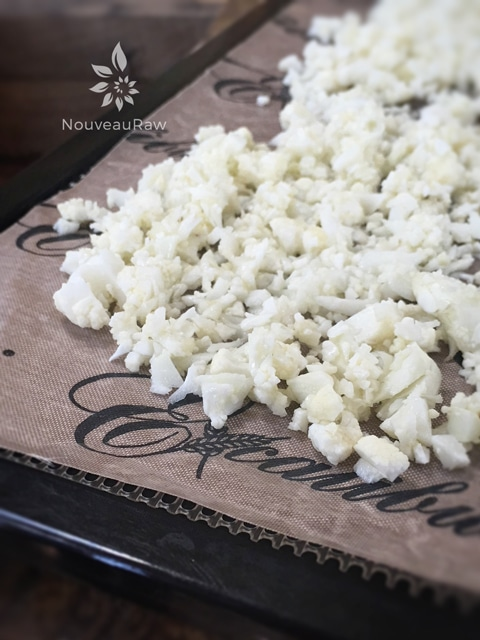

Crunchy Cauliflower Crust Crumbles

~ raw, vegan, gluten-free, nut-free ~
This recipe became something that it wasn’t intended to be. :) Ultimately, I was trying to create a recipe for cauliflower mash. I thought that I would “warm and soften” the roughly chopped cauliflower by placing it in the dehydrator for a few hours.
I left the house and returned 4 hours later. As soon as I walked into the house, I could smell the cauliflower. Mmmm, I was floating on the wonderful aroma as I worked my way through the house…. THEN it hit me…
I forgot about the cauliflower! I trotted to the dehydrator and opened it up. I pulled the glass baking dish out and I busted out laughing. I was staring down at cauliflower dust. It tasted great and had a great texture so I decided to put it in a bowl and wait for further inspiration.
I grabbed another head of cauliflower and proceeded to make a cauliflower rice, and soon I found myself creating a raw casserole. I remember eating a similar dish as a child.
It had rice, cream of mushroom soup and a crunchy topping. If you want to see how it turned out and how I used this recipe with it, please visit… Raw Cauliflower “Rice” and Mushroom Casserole.
This recipe would be great sprinkled on any savory dish. Enjoy and prepare to giggle as you watch a whole head of cauliflower transform into 1 cup of crunchies. :)
Yields 1 cup
- 1 small head cauliflower (roughly 3 cups rough chopped)
- 1-2 Tbsp cold-pressed olive oil
- 1/4 tsp Himalayan pink salt
Preparation:
- Remove the outer leaves from the cauliflower and cut away the large stem. Wash and pat dry.
- Rough chop and place in the food processor, fitted with the “S” blade, and pulse until the cauliflower reaches a rice-like texture.
- I find pulse works best because it causes the cauliflower to jump, giving it an overall, even ricing.
- Place the cauliflower rice, olive oil, and salt in a bowl and toss until the everything is well coated.
- Spread on the non-stick sheets that come with the dehydrator.
- Slide into the dehydrator at 145 degrees (F) for 1 hour, then reduce to 115 degrees (F) for approximately 4 hours, or until dried and crispy.
- Once crunchy, remove and let cool to room temperature.
- Store in airtight container for 3-5 days.
Culinary Explanations:
- Why do I start the dehydrator at 145 degrees (F)? Click (here) to learn the reason behind this.
- When working with fresh ingredients it is important to taste test as you build a recipe. Learn why (here).
- Don’t own a dehydrator? Learn how to use your oven (here). I do however truly believe that it is a worthwhile investment. Click (here) to learn what I use.

Ready for the dehydrator. Crunchy Cauliflower Crust Crumbles here we come.
© AmieSue.com